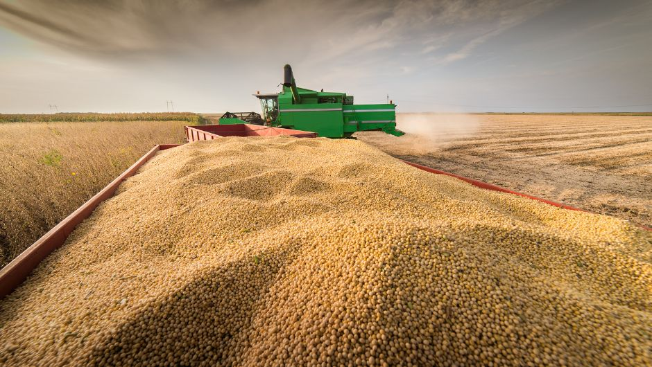
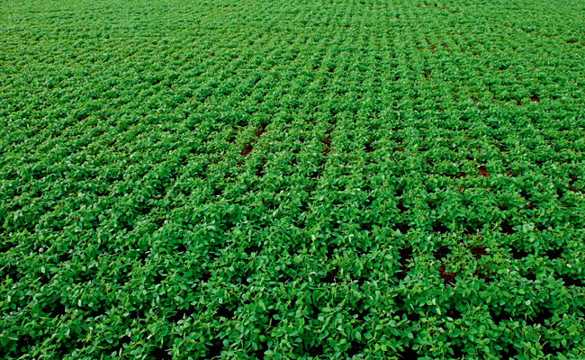

.png)
Sobre a SOLARIS
Nossas Soluções
Nossos Servicos


Nosso compromisso com a qualidade está presente em cada etapa do nosso software de monitoramento e gestão da incidência de luz solar. Trabalhamos com tecnologia de análise automatizada, controle preciso da radiação solar e geração de dados estratégicos, garantindo maior eficiência no campo, redução de perdas e melhores resultados na produtividade agrícola.
Contamos com profissionais qualificados e capacitados para atuar na otimização do uso da luz solar no campo. A atualização constante e o domínio das melhores práticas em tecnologia e agricultura de precisão garantem soluções confiáveis, alinhadas às necessidades reais do produtor e ao desempenho da lavoura.
A Solaris constrói sua reputação com base na transparência, precisão das informações e compromisso com resultados. Valorizamos relações sólidas com nossos clientes, oferecendo dados confiáveis sobre a incidência de luz solar, monitoramento em tempo real e suporte técnico especializado. Ao escolher a Solaris, você opta por segurança, previsibilidade e soluções que realmente impactam a produtividade e a eficiência do seu negócio
.png)